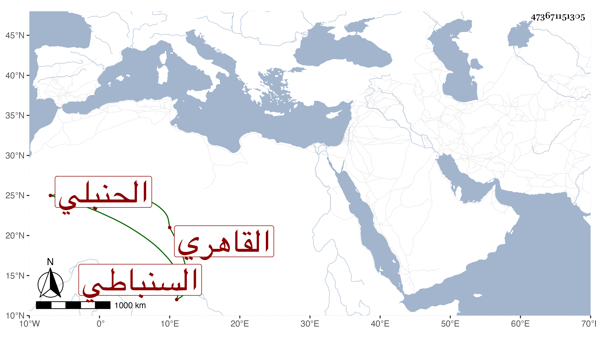

0902Sakhawi.DawLamic.ITO20230111-ara1.EIS1600.473671151305
Biography ID: 473671151305
468
أحمد بن محمد بن عيسى بن يوسف الشهاب بن العدل بن الشمس بن الشرف السنباطي الأصل القاهري الحنبلي والد عبد الله الآتي ويعرف بابن عيسى . ولد تقريبا بعد السبعين وسبعمائة وسمع البخاري بتمامه على العزيز المليجي وناب في الحكم عن المحب البغدادي والعز القدسي وكان يوصف أحيانا في التعيين بالزاهد لأنه لم يكن يتناول على الأحكام شيئا ، وكان يباشر في دواوين الأمراء ولما مرض المحب مرض الموت طمع في ولاية المنصب لكونه كان يباشر شهادة ديوان الناصري محمد بن الظاهر جقمق فلم يلبث أن مرض قبل وفاة المحب مرض الموت ومات بعد المحب بأيام في يوم الخميس ثالث عشري جمادى الأولى سنة أربع وأربعين عن قريب السبعين . وقد ترجمه شيخنا في الأنباء وقال أنه اشتغل قليلا وتعانى الشهادة عند الأمراء بل كان شاهدا في الأحباس ساكنا وقورا متعففا ناب في الحكم مدة ، زاد غيره وكان عنده طرف يسير من العلم ودعوى كثيرة وكان والده يكتب خطا حسنا كتب بخطه كتبا قال في مختصر الخرقي منها أنه كتبه برسم ابنه يعني هذا وأرخها في سنة ثمان وثمانين . وليس صاحب الترجمة بأخ لعمر بن عيسى الذي أكمل شرح الخرقي للزركشي فذاك اسم جده محمد بن موسى وسيأتي في محله .
